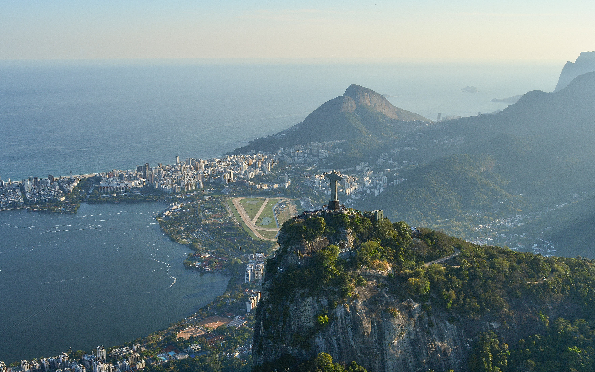
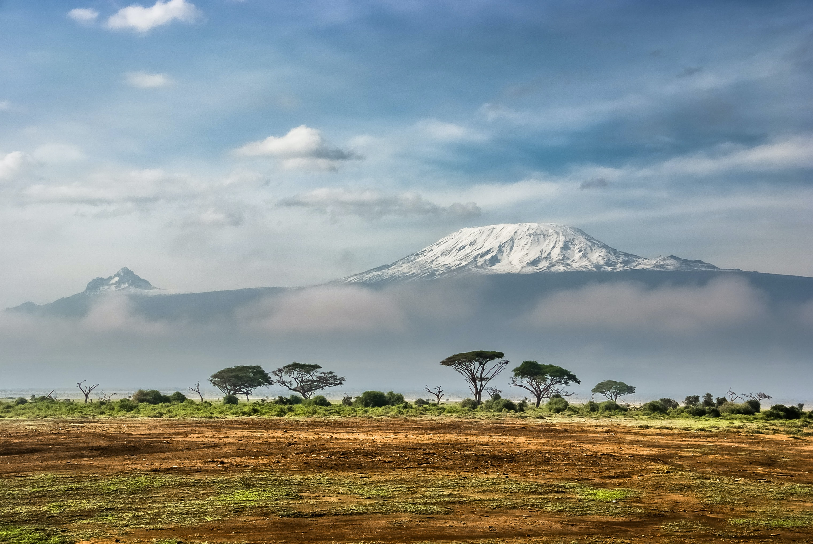

Christ The Redeemer, Rio de Janeiro"
September 30, 2022

Christ the Redeemer, translated in Portuguese Cristo Redentor, is an Art Deco statue of Jesus Christ in Rio de Janeiro, Brazil, created by
French sculptor Paul Landowski and built by Brazilian engineer Heitor da Silva Costa, in collaboration with French engineer Albert Caquot.
Romanian sculptor Gheorghe Leonida fashioned the face. Constructed between 1922 and 1931, the statue is 30 metres (98 ft) high, excluding
its 8-metre (26 ft) pedestal. The arms stretch 28 metres (92 ft) wide. It is made of reinforced concrete and soapstone.The Christ the Redeemer
differs considerably from its original design. The initial plan was a large Christ with a globe in one hand and a cross in the other.
Although the project organisers originally accepted the design, it later changed to the statue of today, with the arms spread out wide.
In the 1850s the Vincentian priest Pedro Maria Boss suggested placing a Christian monument on Mount Corcovado to honour Isabel, princess regent of Brazil and the daughter of Emperor Pedro II, although the project was never approved. In 1921 the Roman Catholic archdiocese of Rio de Janeiro proposed that a statue of Christ be built on the 2,310-foot (704-metre) summit, which, because of its commanding height, would make it visible from anywhere in Rio. Citizens petitioned Pres. Epitácio Pessoa to allow the construction of the statue on Mount Corcovado.
Mount Kilimanjaro
September 30, 2022

Mount Kilimanjaro is a dormant volcano in Tanzania. It has three volcanic cones: Kibo, Mawenzi, and Shira. It is the highest mountain in Africa and the highest single free-standing mountain above sea level in the world: 5,895 metres (19,341 ft) above sea level and about 4,900 metres (16,100 ft) above its plateau base. It is the highest volcano in Africa and the Eastern Hemisphere.
Kilimanjaro is the fourth most topographically prominent peak on Earth. It is part of Kilimanjaro National Park and is a major hiking and climbing destination. Because of its shrinking glaciers and ice fields, which are projected to disappear between 2025 and 2035, it has been the subject of many scientific studies.
Also called a stratovolcano (a term for a very large volcano made of ash, lava, and rock), Kilimanjaro is made up of three cones: Kibo, Mawenzi, and Shira.
Kibo is the summit of the mountain and the tallest of the three volcanic formations. While Mawenzi and Shira are extinct, Kibo is dormant and could possibly erupt again.
Scientists estimate that the last time it erupted was 360,000 years ago. The highest point on Kibo’s crater rim is called Uhuru, the Swahili word for “freedom.” The mountain is
also known for its snow-capped peak; however, scientists warn that the snow might disappear within the next 20 years or so.In 1889, German geographer Hans Meyer and Austrian mountaineer Ludwig Purtscheller became the first people on record to reach the summit of Kilimanjaro. Since then, Kilimanjaro has become a popular hiking spot for locals and tourists. Because mountaineering gear and experience is not needed to reach the peak, tens of thousands of climbers ascend the mountain each year. The climb is still dangerous, however, because of the risk of altitude sickness—a condition climbers experience if they ascend too quickly, which can be deadly if not treated right away.